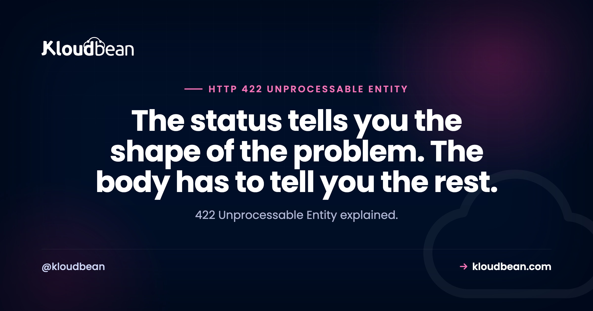

422 Unprocessable Entity: A 422 Without Field Errors Is a Wasted Status Code

422 Unprocessable Entity means your request arrived intact, the server parsed it without difficulty, and the content of it is wrong. Valid JSON describing an impossible thing. That distinction from a 400 is the entire reason the code exists: a 400 says I could not read this, a 422 says I read it perfectly and the values do not work. Which means a 422 is only useful if the response body says which values. Getting a bare 422 with an empty body is worse than getting a 400, because you have been told the request was understood without being told what was understood to be wrong.
The request was well-formed and syntactically valid, so parsing succeeded, but the data failed validation or violated a business rule. A missing required field, a string where a number belongs, an email that is not an email, a date in the past where a future one is needed. Read the response body, because a well-built API names the failing field and often the exact path to it. Do not retry the same payload, since a 422 is deterministic and will fail identically.
422 or 400? The line is real
| 400 Bad Request | 422 Unprocessable Entity | |
|---|---|---|
| Did parsing succeed? | No | Yes |
| Typical cause | Malformed JSON, bad headers, oversized cookies | Failed validation, broken business rule |
| Your code ran? | Often not | Yes, and it decided |
| Fix | The request syntax | The values in the payload |
| Body should contain | What could not be read | Which fields are wrong and why |
A trailing comma in your JSON is a 400. A perfectly formed payload with "age": -5 is a 422. If you are getting a 400 rather than a 422, our 400 Bad Request guide covers the parsing and header side, including the cookie growth that causes most of them on real websites.
Worth knowing that plenty of APIs use 400 for both, and that is not wrong exactly. The specification permits 400 for anything the server declines to process, and 422 originated in WebDAV before REST frameworks adopted it. What is genuinely bad practice is using both inconsistently inside one API, so a client cannot tell from the status code whether to inspect its serialiser or its values. Pick one convention and hold it.
Your framework probably already decided this for you
A useful thing to know before debugging: several major frameworks return 422 automatically for validation failures, so the code may not be a deliberate choice anyone made.
| Framework | Default for failed validation | Body shape |
|---|---|---|
| Rails | 422 via :unprocessable_entity | Whatever you render, commonly an errors object |
| Laravel | 422 from ValidationException | message plus an errors map keyed by field |
| FastAPI | 422 from Pydantic | detail array with loc, msg, type |
| Express | Nothing by default | Whatever you build with Zod, Joi, or similar |
FastAPI's shape is the most immediately useful of these, because loc is a path rather than a name:
{
"detail": [
{
"loc": ["body", "user", "email"],
"msg": "value is not a valid email address",
"type": "value_error.email"
}
]
}That loc array walks you straight to the problem: the body, then the user object, then its email field. For nested payloads that is the difference between reading an error and finding the bug. If you are consuming a FastAPI service and ignoring loc, you are throwing away the most valuable part of the response.
If you are receiving 422s
Three steps, and the first one is usually enough.
Read the body. Not the status, the body. Any API worth using names the field:
curl -sS -X POST https://api.example.com/v1/users \
-H 'Content-Type: application/json' \
-d '{"email":"not-an-email","age":-5}' \
-w '\nHTTP %{http_code}\n' | python3 -m json.toolCompare what you sent against what you meant to send. Serialisation is where this usually goes wrong rather than in your own logic. A number arriving as a string because it came from a form field. A date formatted for humans instead of as ISO 8601. An empty string where the API expects the key to be absent entirely, which is a genuinely common and confusing one, since "" and null and missing are three different states and validators treat them differently.
curl -v -X POST https://api.example.com/v1/users -d "$BODY" 2>&1 | sed -n '/^> POST/,/^< HTTP/p'Do not retry. A 422 is deterministic. The same payload will fail the same way, forever. This matters most in background jobs, where a validation failure treated as transient will retry until it exhausts its attempts and then look like an infrastructure problem in your dashboards. The same reasoning applies to 409 Conflict: some 4xx codes are worth retrying and these are not.
If you are building the API
The opinion that gives this article its title: a 422 whose body does not identify the failing field has thrown away the only advantage it has over a 400. You have spent a more precise status code and delivered no more precision.
What a useful 422 looks like:
{
"error": "validation_failed",
"message": "The request could not be processed.",
"errors": [
{ "field": "email", "code": "invalid_format", "message": "Must be a valid email address." },
{ "field": "age", "code": "out_of_range", "message": "Must be between 0 and 130." },
{ "field": "plan_id", "code": "not_found", "message": "No plan with that identifier." }
]
}Three properties make that worth building. It reports every failure at once rather than the first, so a form can highlight all of them in one pass instead of making the user submit five times. It carries a machine-readable code alongside the human message, so clients can branch on the reason without string-matching your prose. And the field names match the request, which sounds obvious and is routinely violated by APIs that report internal column names.
One thing to be careful about: do not leak internals through validation messages. "No plan with that identifier" is helpful. A database error naming your table and constraint is a small information disclosure and an unhelpful message at the same time, which is a bad combination.
The webhook case, which behaves differently
Worth its own note because the usual advice is actively wrong here.
If you are receiving webhooks and you return a 422 for a payload you consider invalid, what happens next depends on the sender, and many will treat any non-2xx as a signal to retry. So a permanently invalid payload gets redelivered on a schedule, failing identically each time, until the sender gives up days later. You have created recurring noise that can never resolve.
The better pattern for a payload that can never succeed is to accept it, return 2xx, and record it somewhere you can inspect: a dead-letter table, a log with enough context to reconstruct it, an alert if the volume is unusual. Reserve a 4xx response for cases where you genuinely want the sender to stop and where a human at the other end will look at the failure. Rejecting a webhook is a message to another team, and it only works if somebody reads it.
| Symptom | Likely cause | First step |
|---|---|---|
| 422 with a field named in the body | Exactly what it says | Fix that value |
| 422 with an empty body | API is not reporting details | Check its docs, or ask for better errors |
| Works in a client tool, fails from code | Serialisation differs | Print the raw body you sent |
| Numbers rejected as invalid | Sent as strings from form input | Coerce types before sending |
| Optional field rejected when blank | Empty string is not the same as absent | Omit the key rather than sending "" |
| Started after an API version change | New or stricter validation rule | Read the changelog |
| Background job retrying forever | Deterministic failure treated as transient | Stop retrying 422 |
| Webhooks redelivered repeatedly | Sender retries any non-2xx | Accept and dead-letter instead |
Where hosting fits
Straightforwardly: a 422 is your validation working, so this is application logic and it belongs to you. There is no hosting setting that changes it, and any article claiming otherwise is stretching.
Two adjacent things are genuinely relevant. Validation rules usually exist to protect data integrity, and the constraints in your database are the layer underneath them, so managed PostgreSQL, MySQL, and MariaDB sitting in the same dashboard as the application matters when a validation rule and a database constraint disagree. And the background-job point above is a real operational cost, since a queue retrying deterministic failures burns worker capacity that has nothing left to do, which is worth watching in your server metrics.
Beyond that, this article is a design argument rather than a product one: name the field, report every failure at once, and do not retry something that cannot succeed.

Related reading
Its closest neighbour, 400 Bad Request, which covers the parsing side. The code on the other side of the boundary is 415 Unsupported Media Type: the spec says a 422 means the content type was understood, which is precisely why 415 would have been the wrong answer. For the other deterministic 4xx you should not retry, 409 Conflict. On authentication and permissions, 401 Unauthorized and 403 Forbidden. For the codes where retrying is correct, 429 Too Many Requests. On queues that should not retry forever, background jobs with BullMQ. And for the constraints underneath your validation, PostgreSQL performance tuning.
Your database and your app in one place.
Managed PostgreSQL, MySQL, MariaDB, and Redis alongside your application in the same account, with automatic backups and visible server metrics, from $8/mo. Free migration assistance included. Start at kloudbean.com.
Managed databases · Automatic backups · Server metrics · Flat from $8/mo
FAQ
What does 422 Unprocessable Entity mean?
It means the request was syntactically valid and successfully parsed, and its content failed validation or violated a business rule. Typical causes are a missing required field, a value of the wrong type, a badly formatted email or date, or a number outside an allowed range. The response body should name the failing field.
What is the difference between 400 and 422?
A 400 means the request could not be parsed or understood, for example malformed JSON or oversized headers. A 422 means it parsed perfectly and the values are wrong. Practically: fix your syntax for a 400, fix your data for a 422. Many APIs use 400 for both, which is acceptable, though using them inconsistently within one API is not.
Should I retry a 422?
No. A 422 is deterministic, so the same payload will fail identically every time. This matters most in background jobs, where treating a validation failure as transient means retrying until the attempt limit is exhausted, which then looks like an infrastructure problem in your dashboards. Fix the payload or discard the job.
Why do I get a 422 when my JSON looks correct?
Because correct JSON and valid data are different things. Common culprits are numbers sent as strings from form input, dates in a human format rather than ISO 8601, and empty strings where the API expects the key to be absent. An empty string, a null, and a missing key are three distinct states and validators treat them differently.
What does the loc field mean in a FastAPI 422?
It is a path to the failing value rather than just a name, so ["body", "user", "email"] means the email field inside the user object in the request body. For nested payloads that path is the fastest route to the bug, and it is the most valuable part of the response to read.
What should a good 422 response body contain?
Every failing field rather than just the first, a machine-readable code alongside the human message so clients can branch without string-matching, and field names that match the request rather than internal column names. A 422 with an empty body has discarded its only advantage over a 400, since the point of the more precise status is more precise information.
Should I return 422 for an invalid webhook payload?
Usually not, if the payload can never succeed. Many senders retry any non-2xx response, so a permanent validation failure gets redelivered repeatedly and fails identically each time. Accept it, return 2xx, and record it in a dead-letter store you can inspect. Reserve a rejection for cases where you want the sender to stop and somebody there will read it.
Is 422 part of standard HTTP?
Yes. It originated in the WebDAV extensions rather than the core specification, and it has since been widely adopted by REST frameworks, with Rails, Laravel, and FastAPI all returning it by default for validation failures. It is a normal, well-supported status code rather than anything exotic.